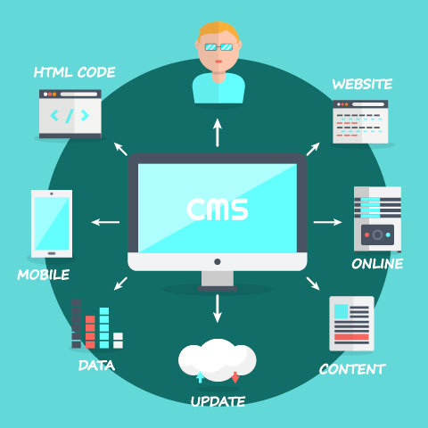

Gestores de contenidos web¿Qué es un gestor de contenidos web? Un gestor de contenidos o CMS (del inglés, Content Management System) es una aplicación web que permite crear, administrar y publicar una página web en Internet sin necesidad de tener conocimientos de programación, ya que disponen de una interfaz o panel de administración a través del cual se puede crear, editar o publicar el contenido de una web. Además, casi todos los CMS disponen de plugins, extensiones o complementos que permiten añadir las funcionalidades que necesitas y personalizar tu sitio al máximo. Entre los usos generales de un Sistema de gestión de contenidos, además de la página web, se encuentran: blog, foros, wiki, E-learning y E-commerce. Ventajas Usabilidad y utilidad. Muchos programadores o desarrolladores ya no dudan a la hora de crear una web, saben que hacerlo con un gestor de contenidos les facilita mucho las cosas ya que ahorran un montón de tiempo. Plugins, extensiones o módulos. Cada gestor de contenidos le llama de una manera diferente, pero casi todos permiten añadir estos tipos de complementos que integran nuevas funcionalidades a tu sitio para hacerlo más grande. Uso de plantillas SEO friendly: poseen características que te permiten optimizar tu web para el buscador más utilizado en la Red. Fácil navegación por parte del usuario y desarrollador Comodidad y fluidez en las actualizaciones tanto de contenidos, como de plugins Empleo de multitud de plugins para aumentar las funcionalidades de la página web Cuenta con una biblioteca donde se guardan todos los archivos y contenidos multimediaDesventajas Poca usabilidad de la interfaz El tiempo para encontrar y editar una página es más largo Solo se puede modificar contenido personal con conocimientos HTML Localizar una página concreta puede convertirse en una tarea imposible. Se incrementa la necesidad de usar manuales de Dreamwaver o Frontpag. Regresar al menú |